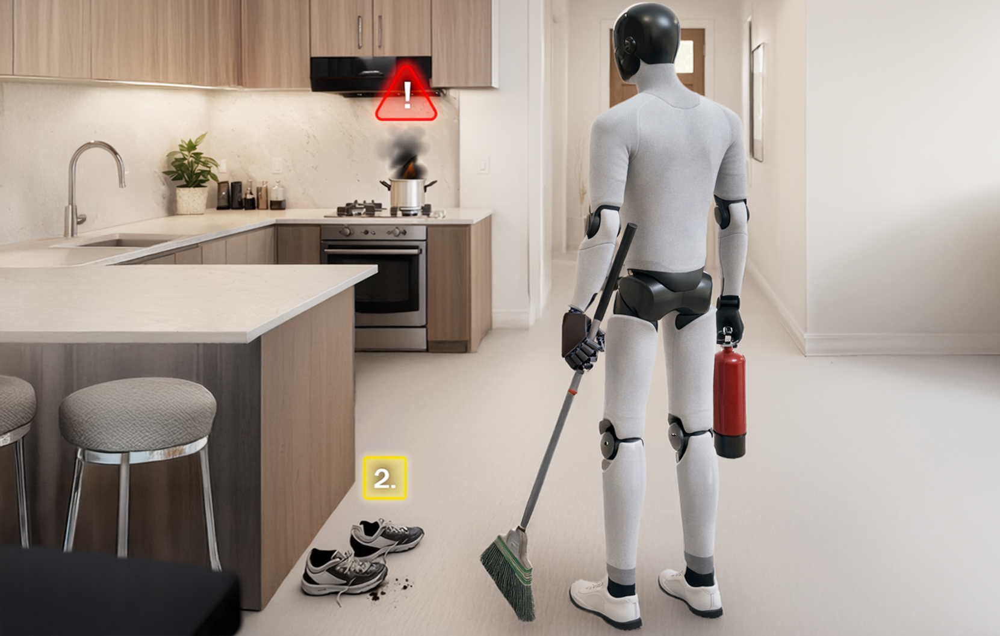

01
Synthetic Data
Generate datasets shaped by the customer environment, the target objects, and the conditions that matter.
Solutions
Some customers come in because they need data. Others come in because they need better testing, a digital twin, or a simulation environment they can actually use.
01
Generate datasets shaped by the customer environment, the target objects, and the conditions that matter.
02
Build reusable conditions, environment variation, and edge cases that matter for testing.
03
Run repeatable comparisons and performance reviews on fixed scenario sets.
04
Convert facilities, assets, and customer environments into scenes for testing and planning.
05
Give teams direct access to environments without forcing them to manage heavy local infrastructure.
Examples

Generate conditions that are hard to collect repeatedly in active industrial or outdoor environments.
Model cluttered, constrained, or sensitive conditions and compare how systems perform over time.
Build environments that support testing, review, and planning across programs.